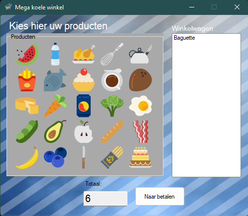

Teun Spithoven
Software Engineering Student
About me
In 2020, I started my IT yourney at Fontys. They showed me some different workfields in IT during the first semester and in the end py preference was at software engineering, and that's what I have been doing from that moment forward. The goal of creating this portfolio is to create a summary of my Software Engineering yourney.
My Skills
Web Application Development
Vue Js
C#
Python
My Projects
Euro to Dollar converter
In my first semester I learned my first programming language: C#. During this semester I learned about programming by making practical assignments, by making an application that converts euros to dollars for example.

Shop register system
After making more of these little assignments i made my final project of my first semester. It is a shopping system that has a shopping cart and check out simulation.

StudyCluster
In the second half of the first semester I participated in a group project where I made a electronic learning enviroment for schools with 5 other classmates. In this assignment we made a class diagram for our .NET OOP application. This assignment also was the first time that I worked with a database.


Circustrain
In semester 2 of the study, i wrote a program that sorts circus animals into train wagons in the most efficcient way, without braking any of the given rules. My application designing skills improved a lot because of this exercice.

Dream Yournal
In semester 2 I had my first encounter with UI design and multi-layered applications. I made an app that can be used to keep track of the dreams you had and see the dreams your friends had.

Bolus calculator
In semester 2 I also did a group project for the company philips, we made a distributed application with a typescript frontend and typescript backend, those layers communicate through express. During this project I also learned how to write unit tests.
Ninja Game
In my third semester I made a web application with python, Django, Node and VueJs. For this distributed web app I made one frontend application with Vuejs and two different Django backends. One for handling user authentication and the saving of used data, and the other one as my game server. This game server uses a websocket for fast back and forth communication between client and server. My software testing skills improved a lot during this project, I wrote unit, integration and e2e tests. I used cypress to test my frontend. All of these tests where automatically run after pushing changes to my github repository because of the CI/CD configuration I set up there.
Contact Me
Eersel, NL
Phone: +31 6 19518380
Email: teun.spithoven@mail.com